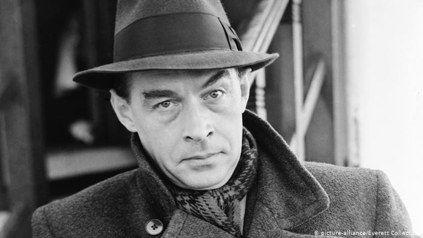

Erich Maria Remarque
Erich Maria 1898–1970 American (German-born) novelist

Erich maria Remarque wears his favorite hat.
Here's a time line of Erich Maria Remarque's life:
- At the age of 16, Remarque had made his first attempts at writing; this included essays, poems, and the beginnings of a novel that was finished later and published in 1920 as The Dream Room (Die Traumbude).
- The original family name, Remarque, had been changed to Remark by his grandfather in the 19th century.
- All Quiet on the Western Front (Im Westen nichts Neues) (1929), his career defining work, was written in 1927, but Remarque was at first unable to find a publisher for it
- After Adolf Hitler seized governmental power in Germany in March 1933, and was granted sweeping powers, creating a de-facto dictatorship, on 10 May 1933, at the initiative of the Nazi propaganda minister Joseph Goebbels, Remarque's writing was publicly declared as "unpatriotic" and was banned in Germany
- In 1938 Remarque's German citizenship was revoked and in 1939, after he and his ex-wife were remarried to prevent her repatriation to Germany, they left Porto Ronco, Switzerland, for the United States just before the outbreak of World War 2 in Europe
- They became naturalised citizens of the United States in 1947
- In 1943 the Nazis arrested his youngest sister, Elfriede Scholz, who had stayed behind in Germany with her husband and two children. After a trial at the notorious "Volksgerichtshof" (Hitler's extra-constitutional "People's Court"), she was found guilty of "undermining morale" for stating that she considered the war lost. She was beheaded.
- In exile Remarque was unaware of his sister Elfriede's fate until after the war, and would dedicate his 1952 novel Spark of Life (Der Funke Leben) to her, but the dedication was omitted in the German version of the book, reportedly because he was still seen as a traitor by some Germans
- In 1948, Remarque returned to Switzerland, where he spent the remainder of his life
- Remarque died of heart failure at the age of 72 in Locarno on 25 September 1970.[11] His body was buried in the Ronco Cemetery in Ronco, Ticino, Switzerland.
- Paulette Goddard, Remarque's wife, died in 1990 and her body was interred next to her husband's. She left a bequest of US$20 million to New York University to fund an institute for European studies, which is named in honour of Remarque
"The Erich-Maria-Remarque Peace Prize is awarded, following the ideas of its namesake, for fictional, journalistic or scientific works which set out to engage with inner and outer peace as well as for demonstrating an exemplary commitment to peace, humanity and freedom."